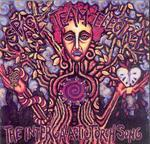

| Artist: | Space Team Electra |
| Title: | The Intergalactic Torch Song |
| Label: | independent |
| Length(s): | 72 minutes |
| Year(s) of release: | 2002 |
| Month of review: | [10/2003] |
| 1) | Mars | 7.15 |
| 2) | The Marriage | 5.18 |
| 3) | Ourobros Omphalos | 8.16 |
| 4) | Absinthe | 7.31 |
| 5) | In Ribbons | 6.14 |
| 6) | Original Sin # 666 | 5.39 |
| 7) | Disolution Of The Order Of The Star | 5.11 |
| 8) | Ice Age | 4.57 |
| 9) | RS2HB | 7.02 |
| 10) | Utopia | 6.27 |
| 11) | Pelican | 8.18 |